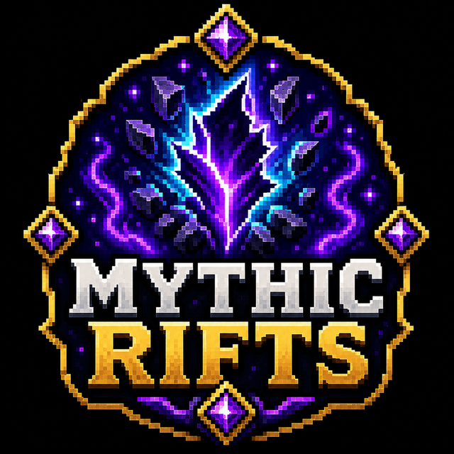

✓
Automatic event rotation
Eligible activities begin on a schedule without manual staff commands.
Automated world events and chat games that keep quiet hours active.
Full overview
MythicEvents is a modular activity engine intended to keep the server active during both busy and quiet periods. It supports lightweight chat challenges alongside physical world events that send players exploring, mining, hunting or surviving unusual conditions.
Events can rotate automatically, announce through Discord and deliver configurable rewards, allowing the server to create regular moments without requiring a staff member to host each one manually.
How it works
The scheduler selects an eligible event, announces it and begins tracking the relevant objective. Chat games focus on speed and accuracy, while world events create locations, targets, mobs or temporary global conditions.
Each event manages its own completion state, winner information and rewards. Administrative menus are planned to make questions, reward commands and event settings editable without rebuilding configuration by hand.
Administration
The project is in development. Automatic scheduling, reward editing, winner reporting and event cleanup are treated as production requirements so activities do not leave behind unmanaged entities or locations.
Feature breakdown
Each headline feature is expanded below so visitors can understand the real server use rather than seeing a short tag list.
Eligible activities begin on a schedule without manual staff commands.
Maths, scrambles, typing and questions create quick participation opportunities.
Players receive hints and search the world for temporary objectives.
Tracked targets turn ordinary combat and gathering into competitions.
Selected nights can create dangerous global mob pressure and special announcements.
Administration tools are designed to manage content from inside the server.
Getting started
This project is not currently offered as a public platform download; its page documents the system and development status.
The project remains in development and is tested as part of the GhoulCraft stack.
Event cleanup, scheduling and rewards are verified individually.
Discord and economy hooks are staged before live use.
New event types are enabled only after their tracking and reset logic is confirmed.
Related projects
Farming Automation
Let animals breed naturally using nearby food sources.
Magical Automation
A magical machine system powered by arcane energy.

Server ExclusiveLiving World System
Corruption cores that spread danger and reshape the world around them.